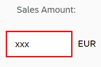

You can view and download all files in the Demo Kit at Data Binding - Step 11.
sap.ui.require([
"sap/ui/model/json/JSONModel",
"sap/ui/core/mvc/XMLView",
"sap/ui/model/resource/ResourceModel"
], function (JSONModel, XMLView, ResourceModel) {
"use strict";
// Attach an anonymous function to the SAPUI5 'init' event
sap.ui.getCore().attachInit(function () {
var oModel = new JSONModel({
firstName: "Harry",
lastName: "Hawk",
enabled: true,
address: {
street: "Dietmar-Hopp-Allee 16",
city: "Walldorf",
zip: "69190",
country: "Germany"
},
salesAmount: 12345.6789,
currencyCode: "EUR"
});
// Assign the model object to the SAPUI5 core
sap.ui.getCore().setModel(oModel);
var oResourceBundle = new ResourceModel({
bundleName: "sap.ui.demo.db.i18n.i18n",
supportedLocales: ["", "de"],
fallbackLocale: ""
});
sap.ui.getCore().setModel(oResourceModel, "i18n");
// Display the XML view called "App"
var oView = new XMLView({
viewName: "sap.ui.demo.db.view.App"
});
// Register the view with the message manager
sap.ui.getCore().getMessageManager().registerObject(oView, true);
// Insert the view into the DOM
oView.placeAt("content");
});
});
The changes to the coding are minimal:
The XML view is now created as a named object called
oView.
The view object oView is registered with the
MessageManager.
Once registered, the XML view is then inserted into the DOM as before.
You can now enter a non-numeric value into the Sales Amount field and either press Enter or move the focus to
a different UI control. This action triggers either the onenter or onchange event and then SAPUI5 executes the validation function belonging to the
sap.ui.model.type.Currency data type.
Now that the view has been registered with the MessageManager, any
validation error messages will be picked up by the MessageManager,
which in turn checks its list of registered objects and then passes the error
message back to the correct view for display.
Note that the field in error has a red border: 
However, the error message itself will only be displayed when that particular field has focus: